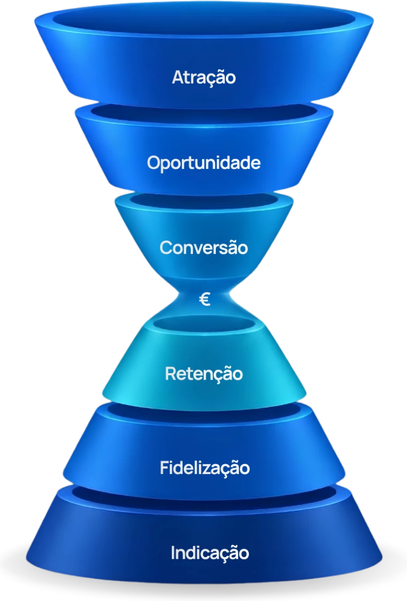
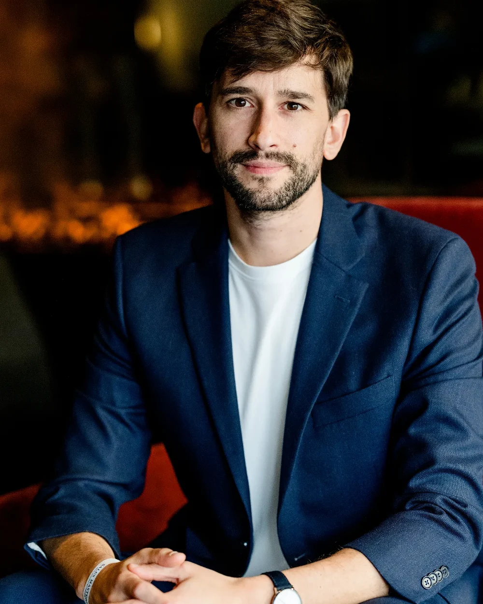
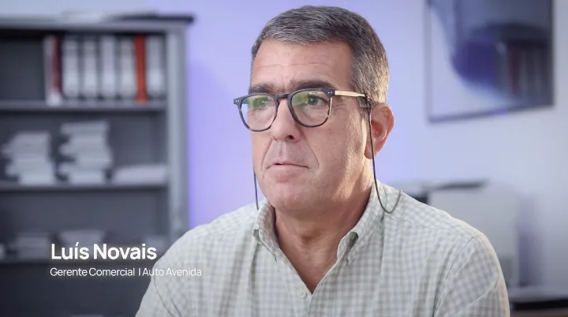
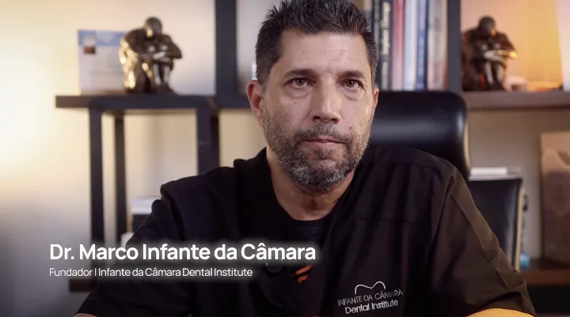
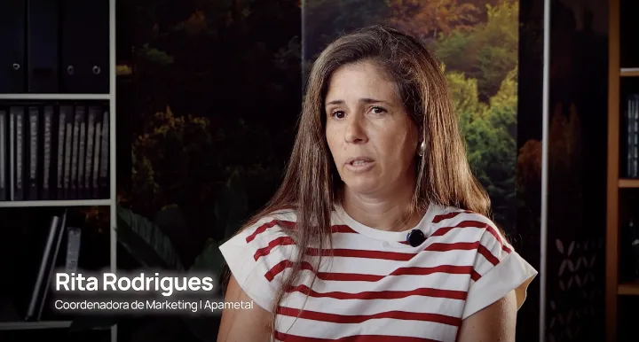
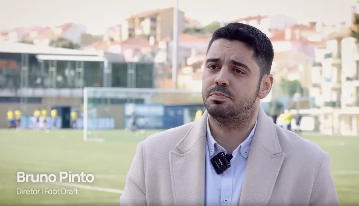
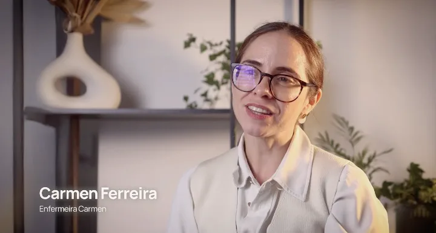
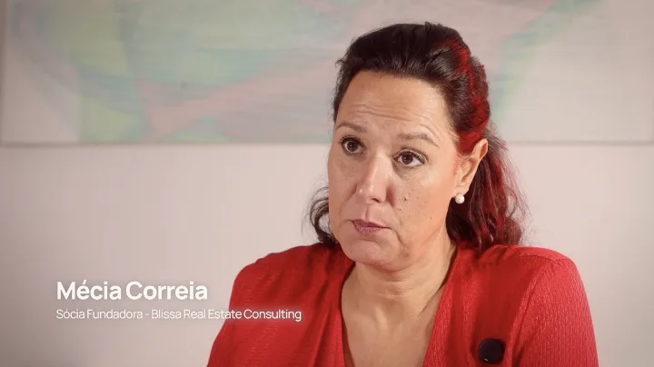

As empresas que escalam têm um sistema. Com o Sistema Previsível de Aquisição de Clientes, sabe todos os meses onde o dinheiro se perdeu, onde gerou oportunidades e onde se transformou em clientes.
O digital não é barato nem fácil, e qualquer agência que diga o contrário está a vender o que quer ouvir, não o que precisa de saber.
A maior parte das empresas de serviços que nos procura tem problema de sistema. Anúncios sem funil não convertem. Funil sem nutrição não aquece. Leads sem processo comercial não fecham.
Cada etapa que falha é faturação que fica pelo caminho.
Para a maioria das agências, atrair leads é o objetivo final. Para nós, é o ponto de partida.

Até à venda
€A venda. É aqui que a maioria das agências pára.
Depois da venda
Não vendemos serviços isolados. Cada peça é construída à medida e ligada às restantes, porque é o sistema completo que traz clientes — não uma campanha à parte.
Criativos, anúncios e vídeo pensados para parar o scroll e comunicar a sua oferta com clareza.
Sequências que mantêm a sua base quente e trazem de volta quem ainda não decidiu comprar.
Contacto imediato assim que a lead entra, no canal onde as pessoas respondem mesmo.
Páginas construídas para converter, testadas e ligadas ao resto do sistema de aquisição.
Todas as leads num só sítio, com o estado de cada conversa visível para toda a equipa.
O que dizer, quando dizer e como responder às objeções, para a venda não depender da inspiração do dia.
Uma hora por mês a olhar para os números consigo e a decidir os próximos passos do trimestre.
Um painel só seu, com investimento, leads, custo por cliente e faturação atribuída.
Um gestor de projeto, um estratega e especialistas de tráfego, design e copy alocados ao seu negócio.
Trinta minutos com a nossa equipa, sem custo e sem pitch de vendas. Neste diagnóstico, vai receber:

Há uns anos, o Ricardo geria um negócio que dependia de indicações. Uns meses entravam clientes, noutros não entrava nenhum — e não havia forma de saber porquê. Investir em anúncios era atirar dinheiro para o escuro e esperar.
Até perceber que o problema nunca tinha sido o anúncio: era não haver sistema por trás dele. Por isso montámos o sistema para nós primeiro — e funcionou tão bem que passámos a instalá-lo nas empresas dos nossos clientes.
A Blue Bolt acompanha mais de 400 negócios, é Google Partner e Meta Business Partner, e está no Top 5% das PME de Portugal. Sabemos o que resulta porque o vemos acontecer todos os meses, em dezenas de contas.






Comece com um diagnóstico gratuito de 30 minutos e veja, em concreto, onde está a perder clientes e o que muda quando a atração, a nutrição e o processo comercial passam a trabalhar juntos. O diagnóstico é grátis, mas só aceitamos um número limitado de novos projetos por mês.